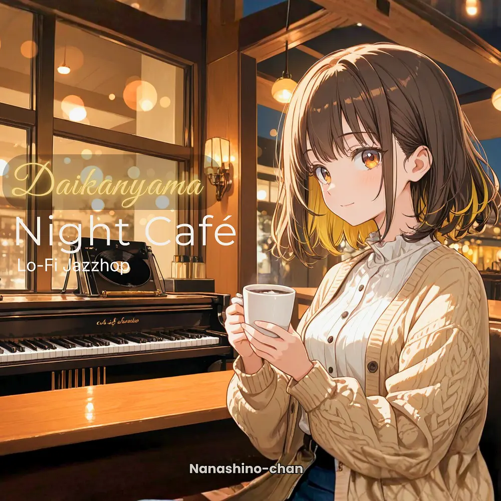

Lo-Fi · Jazzhop
Daikanyama Night Café: Lo-Fi Jazzhop for Study, Focus & Relax
Nanashino-chan
Explore Daikanyama Night Café: Lo-Fi Jazzhop for Study, Focus & Relax by Nanashino-chan: 25 instrumental tracks spanning Lo-Fi / Jazzhop. Start with Daikanyama Night Walk / Warm Lights on Old Streets, preview the collection and find your favorites on streaming services.
2026-04-03 · Released · 25 tracks · Instrumental
Preview the album
The jacket stays here until you choose a track. Playback uses Apple Music. Select your track inside the player.
APPLE MUSIC PREVIEW
Choose a track to listen
The jacket stays here until you choose a track. Playback uses Apple Music. Select your track inside the player.
If playback is unavailable, open the album or track on the streaming service.
Find this album on streaming services
Links marked “search” open search results. Select the album or track on the service.
Track list 25
- 01Daikanyama Night Walk
- 02Warm Lights on Old Streets
- 03After Closing Time
- 04Quiet Corners of the City
- 05Vinyl Echoes
- 06Mellow Steps
- 07Soft Neon Reflections
- 08Late Café Conversations
- 09Jazzy Side Alley
- 10Midnight Piano Flow
- 11.Slow Signals
- 12Calm Between Buildings
- 13Lo-Fi After Hours
- 14Distant Traffic Glow
- 15Smooth Organ Breeze
- 16Night Air in Daikanyama
- 17Cozy Loop Session
- 18Reflections on Glass
- 19Gentle City Pulse
- 20Late Train Home
- 21Soft Focus State
- 22Jazzhop Reverie
- 23Quiet Streets, Warm Beats
- 24Last Light of the Night
- 25Fade into Dawn
Find a sound for your next post
Copy “Nanashino-chan + track title” and paste it into your social app’s music search. Availability depends on your region and account. Copying the name does not grant usage rights.